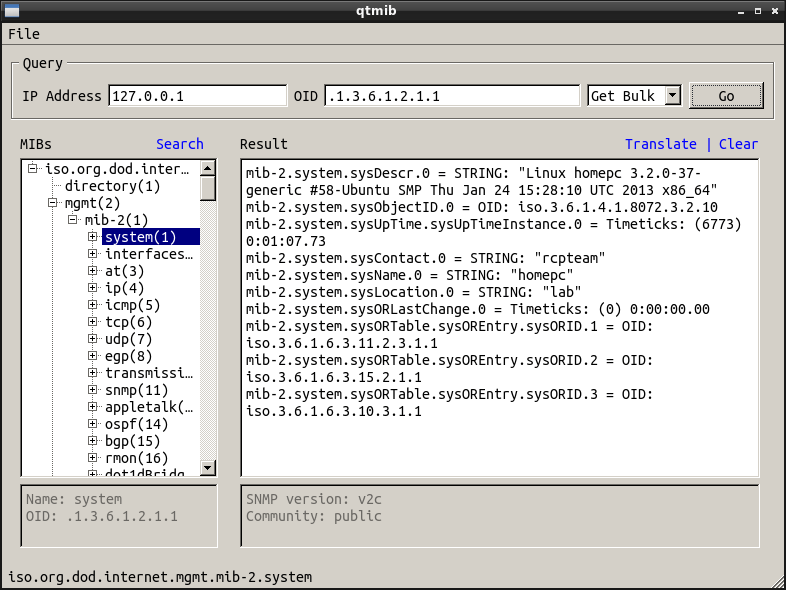

qtmib
an SNMP MIB browser for Linux platforms
Home
Screenshots
Download
Installation
Support
Screenshots

qtmib SNMP MIB browser
Network discovery wizard
System report
Routing table report
TCP/UDP connections report